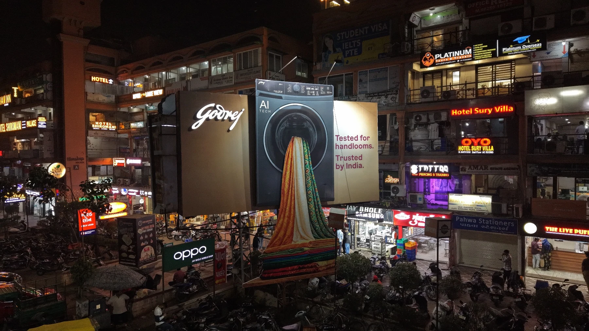
HoardingsAcross Gujarat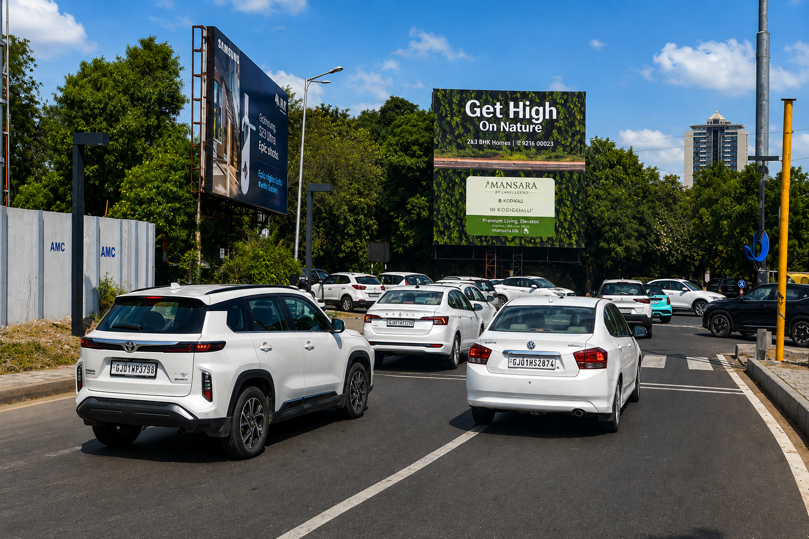
360° ADVERTISING & MEDIA SOLUTIONS
ONE PARTNER.
MULTIPLE MEDIA.
ONE CLEAR OBJECTIVE.
Your audience is everywhere — on the road, in transit, in print, on screens and across digital platforms.
Krishna Outdoor brings together a complete range of advertising and media solutions to help brands build visibility across the touchpoints that matter.
From high-impact outdoor and transit media to print, electronic, digital, social and branding solutions, we help brands explore the right mix of media for the right objective.
“ WHEREVER YOUR AUDIENCE IS,
YOUR BRAND SHOULD HAVE A PRESENCE. ”
YOUR BRAND SHOULD HAVE A PRESENCE. ”
01
OUTDOOR MEDIA
Make a Strong Impression in the Real World.
Outdoor advertising gives brands a physical presence in the places people see every day.
Through our network of hoardings, unipoles and gantries, Krishna Outdoor helps brands create high-impact visibility across Ahmedabad, Gujarat and other key markets.
Enquire About Outdoor Media →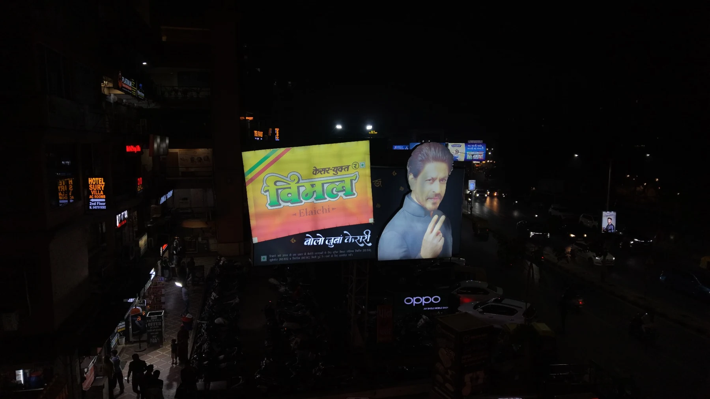
Own HoardingsIn Ahmedabad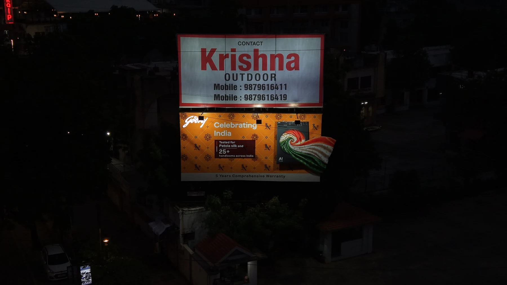
AhmedabadBus Shelters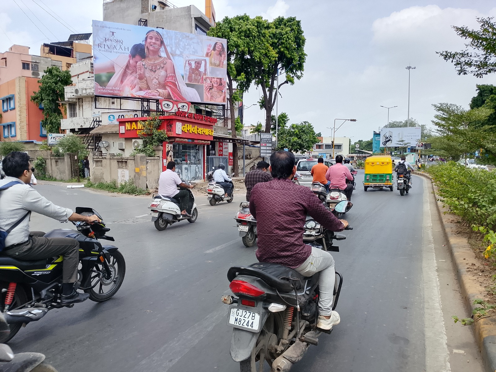
Unipoles & GantriesLong-term structuresExplore hoarding opportunities across key cities, roads and high-visibility locations in Gujarat. From focused local campaigns to wider regional visibility, we help brands identify locations that match their audience and objective.
Our strong presence in Ahmedabad gives brands access to prominent outdoor opportunities across important parts of the city. These locations can support product launches, local market visibility and long-term brand building.
Bus shelters offer a high-attention environment where people pause and wait. Backlit shelter advertising helps brands maintain a visible presence at important urban touchpoints.
Large-format structures such as unipoles and gantries can create a strong visual presence in high-traffic environments, making them ideal for campaigns that require scale and impact.
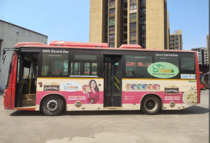
BRANDSMOVE WITH
PEOPLE
02
TRANSIT MEDIA
Visibility That Moves with Your Audience.
Transit advertising takes a brand into everyday movement. From Ahmedabad city buses and bus shelters to Surat EV buses, Mumbai local trains, BEST buses and TMT buses, Krishna Outdoor helps brands create repeated visibility across urban routes and commuter environments.
Enquire About Transit Media →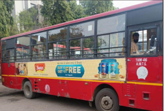
AhmedabadCity Buses
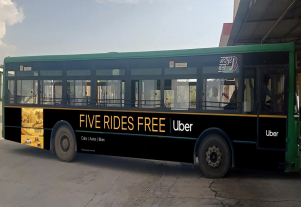
SuratEV Buses
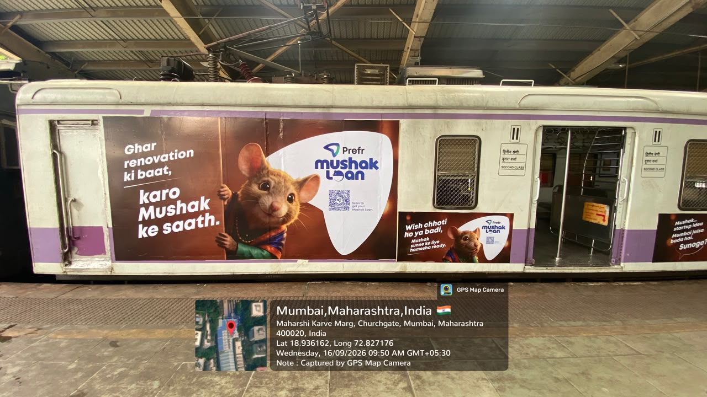
Mumbai LocalTrain Advertising
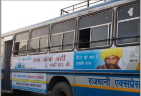
BEST Buses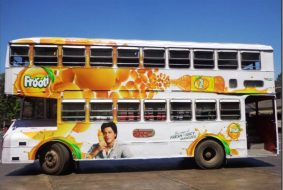
TMT BusesCity bus advertising allows brands to move through the places where people live, work and travel, creating visibility across different neighbourhoods and busy urban routes throughout the day.
Surat's electric city buses provide a modern transit environment that moves through everyday routes and public spaces, helping brands connect with urban audiences through repeated visibility.
Mumbai's local railway network is central to the rhythm of the city. Local train exterior advertising gives brands the opportunity to travel alongside one of the country's most active commuter audiences.
BEST buses are an iconic part of Mumbai's streetscape. Advertising on these moving formats allows brands to stay visible across roads, neighbourhoods and the everyday journeys that connect the city.
TMT bus advertising provides brands with moving visibility across Thane's urban and commuter routes and helps maintain a physical presence across important local markets.
Selected transit opportunities in Jaipur help extend visibility into another important urban market through high-frequency city movement.
03
PRINT MEDIA
Put Your Message in a Medium People Trust.
Newspaper advertising remains an important communication platform for brands looking for market reach, credibility and strong regional communication.
Krishna Outdoor's wider advertising expertise includes print capabilities strengthened by the legacy and experience of Rakesh Advertising. Through experienced media planning and INS agency capabilities, we help brands explore relevant newspaper opportunities based on market, readership, campaign objective and budget.
Plan Your Print Campaign →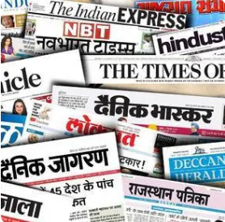
IDEASREACH
FURTHERKRISHNA OUTDOOR
FURTHERKRISHNA OUTDOOR
Wide ReachAcross Key MarketsCredible PlatformTrusted CommunicationRegional ExpertiseLocal Market UnderstandingStrategic Media PlanningRight Message. Right Medium.

04
ELECTRONIC MEDIA
Sound. Sight. Storytelling.
Electronic media gives brands the opportunity to communicate through powerful combinations of audio, visual storytelling and audience reach.
05
DIGITAL & SOCIAL MEDIA
Keep the Conversation Going.
Today's audience moves between the physical and digital worlds throughout the day.
Our digital and social media services help brands support wider campaign objectives through relevant online communication, targeted promotion and audience engagement.
We help brands strengthen their online presence and support campaign objectives through relevant digital communication and performance-focused activity.
Social media advertising allows brands to communicate with audiences through targeted promotion and campaign-led content across relevant platforms.
One of the strongest opportunities for modern campaigns is connecting physical visibility with digital communication — creating attention in the real world and continuing the conversation online.

Digital
MarketingSocial
MediaOutdoor +
Digital
MarketingSocial
MediaOutdoor +
Digital
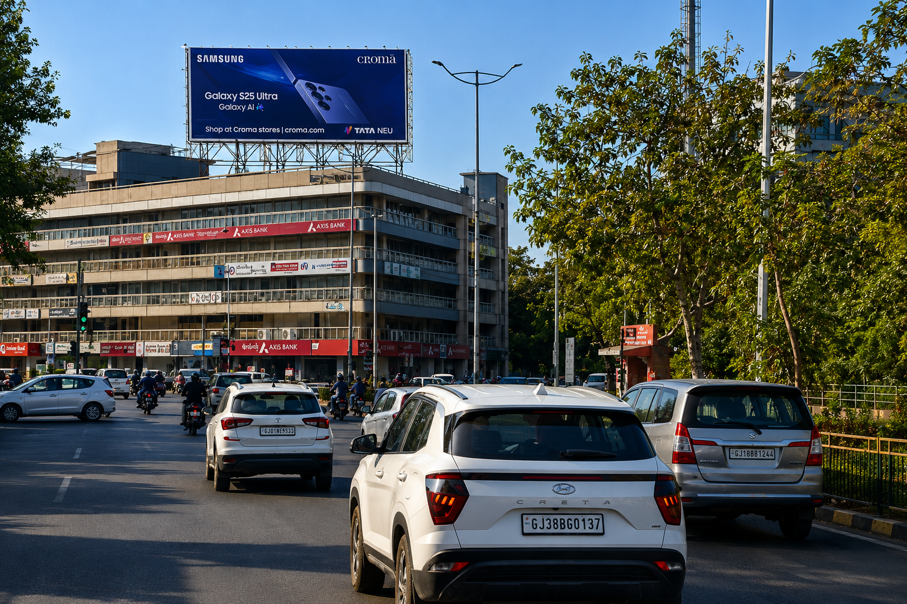
06
BRANDING SOLUTIONS
Build a Brand People Recognise.
Advertising can create attention, but a clear and consistent brand identity helps turn attention into recognition.
Our branding solutions help businesses shape the way they communicate through clear identity, campaign communication, creative direction and marketing support.
Brand CommunicationCampaign CreativeMarketing Support
We help businesses bring greater consistency to how they communicate their identity, message and value.
A campaign needs communication that works within the environment where it will be seen. From outdoor creatives to integrated campaign communication, our focus is on clarity, relevance and consistency.
We support brands with communication and creative requirements that help maintain a consistent presence across different advertising platforms.
ONE CAMPAIGN.
ONE CAMPAIGN. MANY POSSIBILITIES.
Every campaign is different. The right solution may be one powerful media format or a combination of several. Our job is to help you understand the possibilities and build a media approach around your objective, audience and market.
From physical visibility to digital engagement, Krishna Outdoor brings multiple advertising capabilities together under one experienced team.